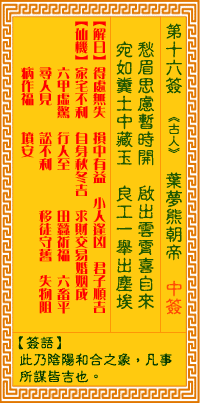

观音灵签第十六签 【叶梦熊朝帝】 |
 | |||
攒眉思虑暂时开 咫尺云开见日来 宛似污泥中片玉 良工一举出尘埃 |
||||
| 【吉凶】 | 中上签 | 【宫位】 | 卯宫 | |
| 【签语】 | 此卦阴阳和合之象，凡事所谋皆吉也。 | |||
| 【解曰】 | 得处无失 损中有益 小人逢凶 君子顺吉 | |||
| 【仙机】 | 此签家宅不利，自身秋冬吉，求财交易婚姻成，六甲虚惊，行人至，田蚕祈福，六畜平，寻人见，讼不利，移徙守旧，失物阻，病作福， 坟安。 | |||
| 【详解】 | 抛去心中的忧愁不再愁眉不展，从此运程向吉拨云见日;就好像那原本埋没在污泥中的清玉，待得良匠视出掘起便远离了尘垢。 得处无伪，损中有益，顺逆吉凶，君子得吉。此签如玉在泥之象，凡事遇贵则吉。 如玉在污泥中之象。如获良工贵人一举。牵成时。出污泥则。可获吉也。亦即是表明君之今也。咫尺眼前之云拨开即得见日者。时运将到者。曰：得处无伪损中有益顺逆吉凶君子得吉之签。 此签有”忠言逆耳”之意。意味当事人，饮水思源。从小到大，我们身边多少会有关心自己的人。诸如父母、师长、朋友...等，或许心直口快直言不讳，但应知忠言逆耳，其用意无非是希望我们行得正、坐得稳，不致产生偏差的行为。应时刻抱持感恩的心，珍惜图报、用心体会。切勿轻视忽略，或视为理所当然、不放在心上。免得忽然有一天，关心的人不见了，离开了，才猛然领悟对方的语重心长而愧叹思念，到时岂不徒然，空留遗憾。 | |||
| 【典故】 | 叶梦熊是明朝嘉庆年进士，为人有胆识，忠贞爱国，万历年间，承恩在边疆地带滋扰，造成社会不安宁，可是却没有人敢前往平乱。梦熊极为愤慨，亲自上朝晋见神宗皇帝，要求领兵前往讨伐，为国效劳。《龙剑记》传奇（曲海总目提要） | |||